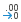
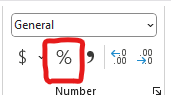

| pclass | survived | name | sex | age | age.group | ticket | fare | cabin | embarked |
|---|---|---|---|---|---|---|---|---|---|
| 1 | 1 | Appleton, Mrs. Edward Dale (Charlotte Lamson) | female | 53 | 36 to 59 | 11769 | 51.4792 | C101 | Southampton |
| 1 | 0 | Artagaveytia, Mr. Ramon | male | 71 | 60+ | PC 17609 | 49.5042 | NA | Cherbourg |
| 1 | 0 | Astor, Col. John Jacob | male | 47 | 36 to 59 | PC 17757 | 227.5250 | C62 C64 | Cherbourg |
| 1 | 1 | Astor, Mrs. John Jacob (Madeleine Talmadge Force) | female | 18 | 18 to 35 | PC 17757 | 227.5250 | C62 C64 | Cherbourg |
| 2 | 0 | Lamb, Mr. John Joseph | male | NA | Unknown | 240261 | 10.7083 | NA | Queenstown |
| 2 | 1 | Laroche, Miss. Louise | female | 1 | 0 to 17 | SC/Paris 2123 | 41.5792 | NA | Cherbourg |
| 2 | 1 | Laroche, Miss. Simonne Marie Anne Andree | female | 3 | 0 to 17 | SC/Paris 2123 | 41.5792 | NA | Cherbourg |
| 2 | 0 | Laroche, Mr. Joseph Philippe Lemercier | male | 25 | 18 to 35 | SC/Paris 2123 | 41.5792 | NA | Cherbourg |
| 3 | 0 | Barry, Miss. Julia | female | 27 | 18 to 35 | 330844 | 7.8792 | NA | Queenstown |
| 3 | 0 | Barton, Mr. David John | male | 22 | 18 to 35 | 324669 | 8.0500 | NA | Southampton |
| 3 | 0 | Beavan, Mr. William Thomas | male | 19 | 18 to 35 | 323951 | 8.0500 | NA | Southampton |
7 Summarizing categorical data
7.1 Learning objectives
In this chapter, you will learn how to work analyze textual data, one of the two fundamental forms of data as we learned in Chapter 3. More specifically, at the end of this chapter, you will:
- Understand what categorical data is and how to identify it in a dataset.
- Understand the different between nominal categorical data and ordinal categorical data.
- Understand the concepts of distribution, frequency (count), and relative frequency (proportion), and how to represent them using tables.
- Know how to transform raw textual data into categorical data.
7.2 Categorical data
When you encouter textual data in a datasetCategorical variables are groups or categories that can be nominal or ordinal.
7.2.1 Nominal data
Nominal variables represent categories or groups between which there is no logical or hierarchical relationship.
7.2.2 Ordinal data
Ordinal variables represent categories or groups that have a logical order. They are often used to transform numerical variables.
Categories represented with numbers
It is important to look at your data to understand what the values represent. Sometimes you may have groups that are represented with numbers. When deciding what type of statistical analysis is adequate for a given variable, you most likely will want to consider treating those variables as categorical and not numerical..
7.2.3 Example: Titanic passengers dataset
The following examples and videos are using a simplified version (available here) of the titanic dataset (available here). This is what our practice dataset looks like:
7.3 Identifying categorical data
In this chapter, we are focusing on categorical data, so the first step is determining which columns in our dataset contain categorical data and what type of categorical data (nominal or ordinal) they are. In the following video, I walk you through this process:
7.4 Summarizing categorical data
There is not a lot that you can do with a single categorical variable other than reporting the frequency (count) and relative frequency (percentage) of observations for each category. To do this, we are going to use a tool that we have already learned: pivot tables.
7.4.1 Frequency
A typical tool to analyze categorical data is to count the number of observation that fall into each of the groups.
| embarked | freq |
|---|---|
| Cherbourg | 270 |
| Queenstown | 123 |
| Southampton | 914 |
| NA | 2 |
7.4.2 Relative frequency
The relative frequency is simply the frequency represented as a percentage rather than count. It is obtained by first computing the frequency and then calculating the relative frequency by dividing each count by the total.
| embarked | freq | rel_freq |
|---|---|---|
| Cherbourg | 270 | 0.2062643 |
| Queenstown | 123 | 0.0939649 |
| Southampton | 914 | 0.6982429 |
| NA | 2 | 0.0015279 |
7.4.2.1 Rounding the values
When we calculate the relative frequency, we obtain numbers with a lot of decimals. We can remove or add decimals by selecting our data and clicking on the or  buttons, respectively.
7.4.2.2 Converting the relative frequency to percentages
Another thing we might want to do is show the relative frequency as a percentage. This can be done by clicking the % button in excel.

| embarked | freq | rel_freq (%) |
|---|---|---|
| Cherbourg | 270 | 20.6 |
| Queenstown | 123 | 9.4 |
| Southampton | 914 | 69.8 |
| NA | 2 | 0.2 |
7.4.3 Demo
In this video, I show you how to summarize categorical data using the frequency and the relative frequency.
7.5 Converting numerical data into categorical data
Just because a column in a dataset does not contain categorical data, doesn’t mean it can’t be transformed into categorical data. For examples, age groups (e.g. 0-17, 18-35, etc.) are groups (categorical) based on age (numerical). Here’s a video showing we can make that transformation in our Titanic dataset.
7.6 Summary
In this chapter, we learned how to produce clear and well presented tables to summarize categorical data.